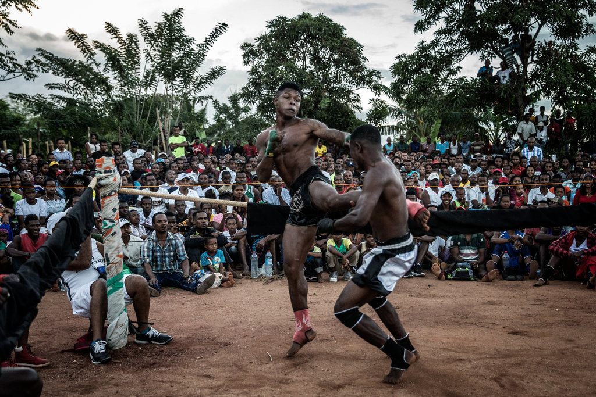
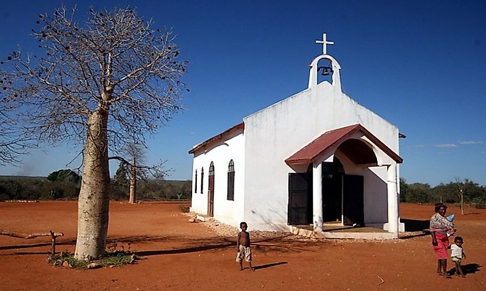
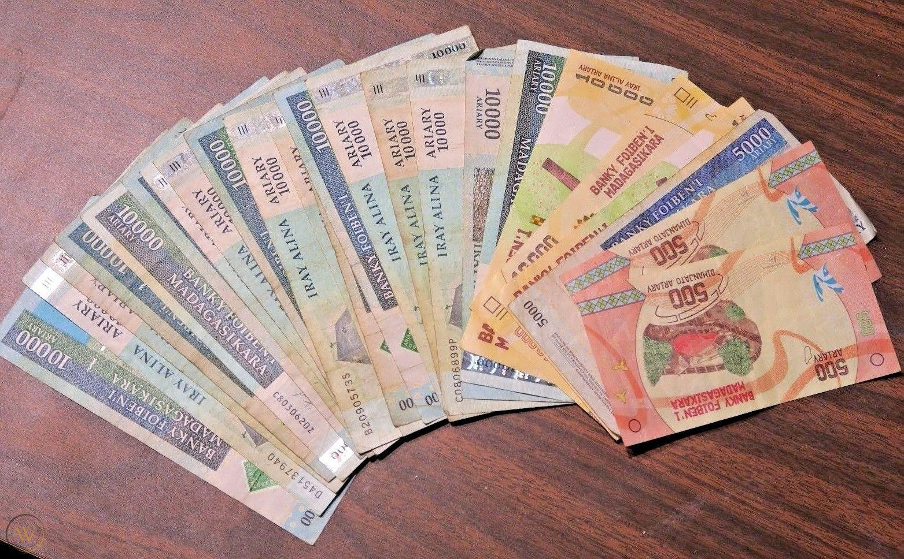

Sports:
Moraingy, an indigenous hand-to-hand combat game is popular in the coastal regions of Madagascar. Zebu wrestling is also practiced in the rural areas of the country. Fanorona is a board game that is extremely popular in the highlands of Madagascar. A large number of Western sports are also played here. Rugby is regarded as the nation’s national sports. Football is also played here. The French game of Pétanque is played widely in the highlands and urban areas of Madagascar and the country has even produced a world champion in the game. The country first competed in the Olympic Games in 1964. Some schools in the country offer to teach a number of sports like soccer, judo, basketball, tennis, boxing, etc., to the students.
Religion:
Religion: The remaining population of Madagascar is mostly composed of Christians. The religion spread in the country after the arrival of the Christian missionaries in 1818. The reigning Queen Ranavalona I did not support the spread of the religion and persecuted the converts but her heir, Queen Ranavalona II was a strict adherent of Christianity and under her rule, the religion flourished in Madagascar. Today, most Christians in the country integrate the traditional religion with modern Christianity and continue to perform ancestral worship. Islam is another religion practiced by a significant minority in Madagascar. The religion was introduced by the Arabs and Somali traders in the Middle Ages. The religion, however, failed to spread inland and followers of Islam are primarily restricted to the Antsiranana and Mahajanga provinces of the country. About 7% of the population of Madagascar practice Islam. Hinduism has also been introduced in the country by the Gujarati merchants who settled there for trade. Christian festivals are celebrated with great pomp and glory in Madagascar. Secular holidays observed here include the Memorial Day on March 29 in memory of those who sacrificed their lives in the 1949 French Malagasy War and the Labor Day on the third Thursday in the month of May. Women rights and freedoms are recognized on the International Women's Day. The country’s independence from French rule is celebrated on June 26. The Celebration of the Dead, a day devoted to the ancestors, is observed on November 1.
Economy:
Madagascar’s economic freedom score is 57.7, making its economy the 112th freest in the 2021 Index. Its overall score has decreased by 2.8 points, primarily because of a decline in judicial effectiveness. Madagascar is ranked 17th among 47 countries in the Sub-Saharan Africa region, and its overall score is above the regional average but below the world average. This year, Madagascar’s economy sank back into the ranks of the mostly unfree, which is not encouraging for a country that is among the poorest in the world. To achieve greater economic freedom, the government would have to reduce the fiscal risks of its state-owned electricity and water utilities, strengthen the rule of law, make the labor market more flexible, and establish political stability.
Sports:

Moraingy, an indigenous hand-to-hand combat game is popular in the coastal regions of Madagascar. Zebu wrestling is also practiced in the rural areas of the country. Fanorona is a board game that is extremely popular in the highlands of Madagascar. A large number of Western sports are also played here. Rugby is regarded as the nation’s national sports. Football is also played here. The French game of Pétanque is played widely in the highlands and urban areas of Madagascar and the country has even produced a world champion in the game. The country first competed in the Olympic Games in 1964. Some schools in the country offer to teach a number of sports like soccer, judo, basketball, tennis, boxing, etc., to the students.
Religion:

The remaining population of Madagascar is mostly composed of Christians. The religion spread in the country after the arrival of the Christian missionaries in 1818. The reigning Queen Ranavalona I did not support the spread of the religion and persecuted the converts but her heir, Queen Ranavalona II was a strict adherent of Christianity and under her rule, the religion flourished in Madagascar. Today, most Christians in the country integrate the traditional religion with modern Christianity and continue to perform ancestral worship. Islam is another religion practiced by a significant minority in Madagascar. The religion was introduced by the Arabs and Somali traders in the Middle Ages. The religion, however, failed to spread inland and followers of Islam are primarily restricted to the Antsiranana and Mahajanga provinces of the country. About 7% of the population of Madagascar practice Islam. Hinduism has also been introduced in the country by the Gujarati merchants who settled there for trade. Christian festivals are celebrated with great pomp and glory in Madagascar. Secular holidays observed here include the Memorial Day on March 29 in memory of those who sacrificed their lives in the 1949 French Malagasy War and the Labor Day on the third Thursday in the month of May. Women rights and freedoms are recognized on the International Women's Day. The country’s independence from French rule is celebrated on June 26. The Celebration of the Dead, a day devoted to the ancestors, is observed on November 1.
Economy:

Madagascar’s economic freedom score is 57.7, making its economy the 112th freest in the 2021 Index. Its overall score has decreased by 2.8 points, primarily because of a decline in judicial effectiveness. Madagascar is ranked 17th among 47 countries in the Sub-Saharan Africa region, and its overall score is above the regional average but below the world average. This year, Madagascar’s economy sank back into the ranks of the mostly unfree, which is not encouraging for a country that is among the poorest in the world. To achieve greater economic freedom, the government would have to reduce the fiscal risks of its state-owned electricity and water utilities, strengthen the rule of law, make the labor market more flexible, and establish political stability.